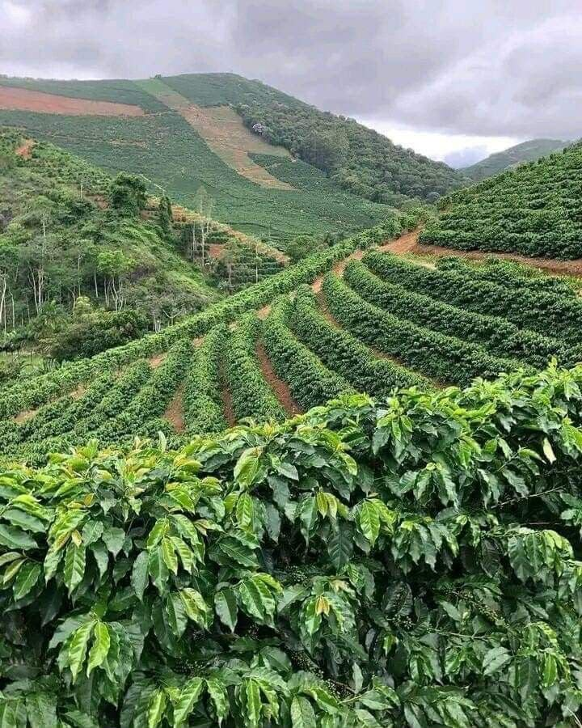

About Our Coffee Plantation
Green Hills Coffee Plantation is dedicated to growing quality coffee. We welcome visitors, tourists and potential coffee buyers to learn about our farm, the coffee varieties we grow and how coffee is produced.

Learn more about coffee on Learn About Coffee.
Coffee Varieties
Our plantation grows the following coffee varieties:
- Arabica
- Robusta
- Batian
- Ruiru 11
Coffee Production Process
The five main stages of coffee production are:
- Planting
- Cultivation and maintenance
- Harvesting
- Processing and drying
- Packaging
Coffee Plantation Activities
- Pruning
- Removing selected branches from coffee plants to encourage healthy growth and improve productivity.
- Harvesting
- Picking ripe coffee cherries from the coffee plants when they are ready for processing.
- Drying
- Reducing moisture in processed coffee beans to help preserve their quality before storage and packaging.